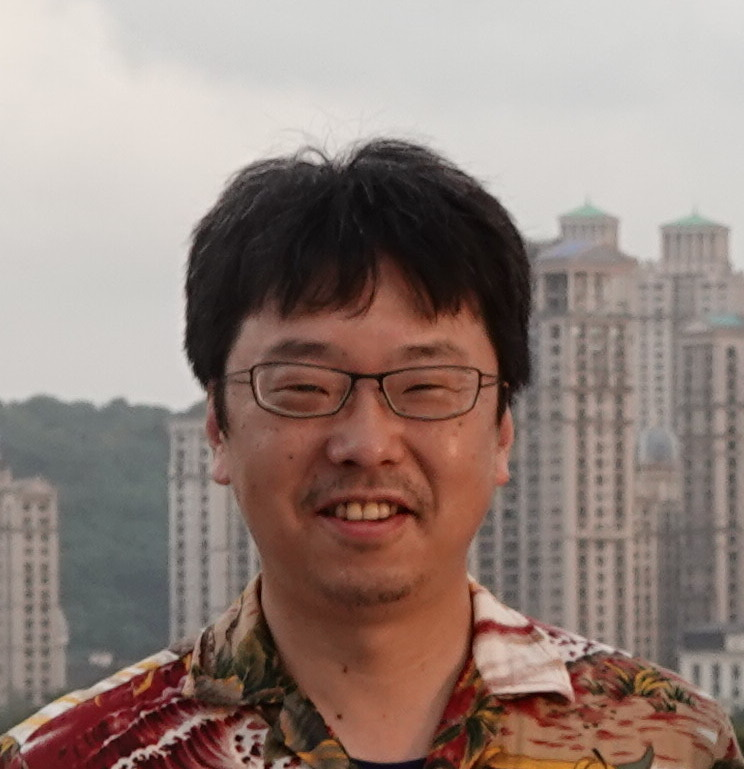
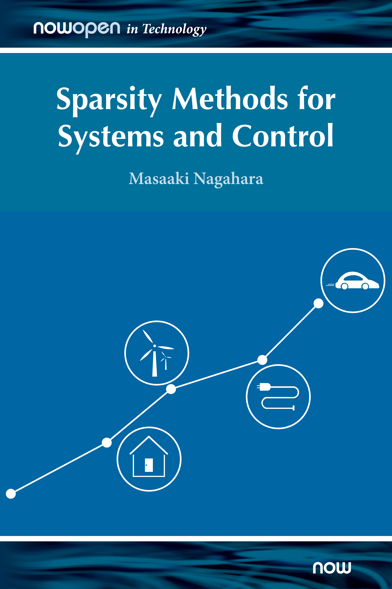

[English] [Japanese]
Masaaki Nagahara

Full Professor
Institute of Environmental Science and Technology
The University of Kitakyushu
Hibikino, Wakamatsu-ku, Kitakyushu, Fukuoka
808-0135, JAPAN
Office: Hibikino Main Building N421 (see MAP Link)
E-mail: nagahara@kitakyu-u.ac.jp
Systems and Control Engineering
Indian Institute of Technology Bombay
Powai, Mumbai 400 076, Maharashtra, INDIA
IEEE CSS Interview (People in Control)
Resume
Curriculum Vitae
List of Publications
ORCID
ResearcherID
Google Scholar Citations
ResearchGate
 (My Linkedin page)
(My Linkedin page)
My new book Sparsity Methods for Systems and Control has been published!

This is an open access book, so you can download pdf from here for free!
Slides and lecture videos are also available at this page.
Book Reviews
Definitely this book will be interesting to broad control, mathematics, and engineering communities.
The author should definitely try to expand the book to include sparse control problems in their full generality.
Aleksandar Haber, The City University of New York, USA.
The writing style is live and easy to follow. In particular, I like very much the examples, problems,
and Matlab simulations with actual code segments that are included in the first chapters.
The proposal is timely and the topic of sparsity in control is very broad. In addition,
to the systems and control community, I expect it will appeal to the machine learning community.
Ivan Markovsky, Vrije Universiteit Brussels, Belgium.
Biography
Masaaki Nagahara received the bachelor's degree in engineering from Kobe University in 1998, and the master's degree and the Doctoral degree in informatics from Kyoto University in 2000 and 2003, respectively.
He is currently a Full Professor with the Institute of Environmental Science and Technology, The University of Kitakyushu. He has been a Visiting Professor with Indian Institute of Technology (IIT) Bombay since 2017, and IIT Guwahati since 2020. His research interests include control theory, machine learning, and signal processing.
He received Transition to Practice Award in 2012 and George S. Axelby Outstanding Paper Award in 2018 from IEEE Control Systems Society. He also received Young Authors Award in 1999, Best Paper Award in 2012, Best Book Authors Award in 2016, and SICE Control Division Research Award (Kimura Award) in 2020 from SICE, and Best Tutorial Paper Award in 2014 from IEICE Communications Society.
He is a senior member of IEEE, and a member of SICE, ISCIE, IEICE, JSME, and RSJ.
Main Fields of Interest
Automatic Control, Artificial Intelligence, Machine Learning, Signal Processing, Applied Mathematics
Education
2003, Doctor's Degree (Informatics), Kyoto University
2000, Master's Degree (Informatics), Kyoto University
1998, Bachelor's Degree (Engineering), Kobe University
Awards and Honors
2021, Best Book Authors Award from the Society of Instrument and Control Engineers (SICE)
2021, Best Paper Award in Automation in 2021 IEEE International Conference on Mechatronics and Automation (IEEE ICMA 2021)
2020, SICE Control Division Research Award (Kimura Award) from the Society of Instrument and Control Engineers (SICE)
2018, George S. Axelby Outstanding Paper Award from IEEE Control Systems Society
2016, Best Book Authors Award from the Society of Instrument and Control Engineers (SICE)
2015, Outstanding Reviewer, Automatica
2015, IEEE Kansai Section Medal, IEEE Kansai Section
2014, Distinguished Service Award, IEICE Technical Group on Signal Processing (SIP)
2014, Senior member of IEEE, 2014
2014, Best Tutorial Paper Award from IEICE Communications Society
2012, Transition to Practice Award from IEEE Control Systems Society
2012, Best Paper Awards from the Society of Instrument and Control Engineers (SICE)
2005, Finalist of SICE Annual Conference Award (Yound Author's Award)
1999, Young Authors Award from the Society of Instrument and Control Engineers (SICE)
Professional/Volunteer Activities
General Co-Chair of IEEE Conference on Control Technology and Applications (CCTA2027)
Awards Chair of 8th IFAC Conference on Nonlinear Model Predictive Control (NMPC 2024)
Delegate of ISCIE (2022-)
Director of Journal of SICE (2022-)
Online Program Chair for IFAC WC 2023
Editor of SICE Journal of Control, Measurement and System Integration (JCMSI) (2022-)
Associate Editor of Advanced Robotics (2021-)
Associate Editor of Asian Journal of Control (2019-)
Associate Editor for Conference Editorial Board, IEEE Control Systems Society (2013-2022)
Member of IEEE CSS Technical Committee on Networks and Communications (2018-)
Member of IFAC Technical Committee 2.1 Control Design (2014-)
Affiliate Member of IEEE Signal Processing Society, Signal Processing Theory and Methods (SPTM) Technical Committee (2014-)